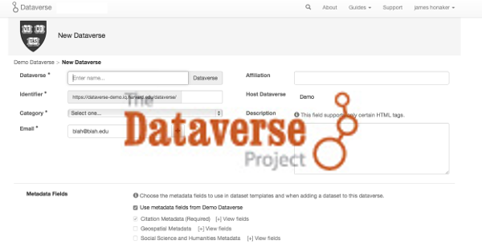
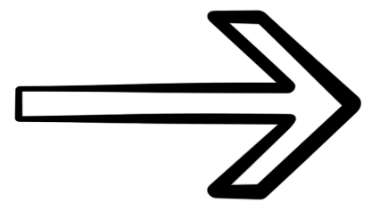
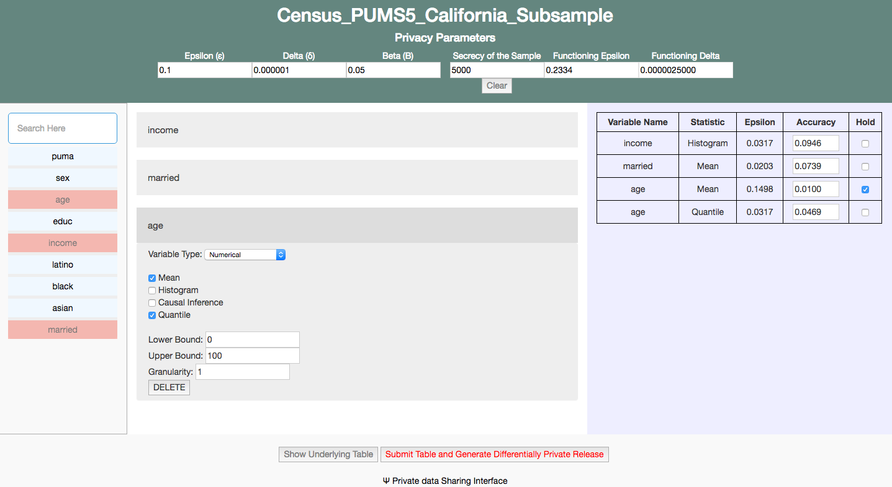
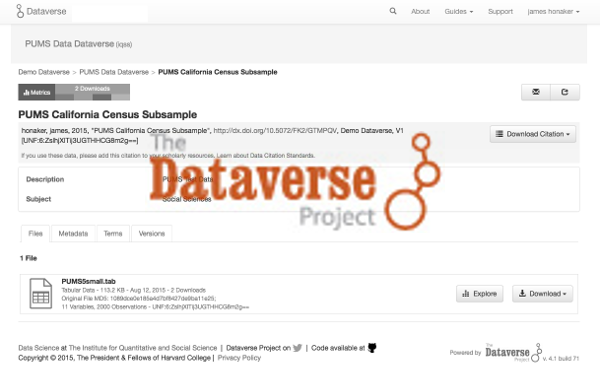
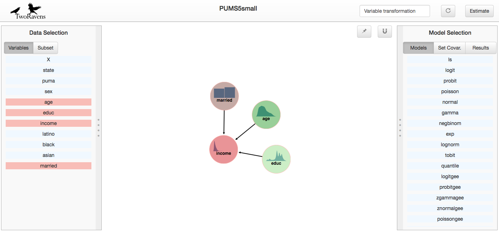

A National Science Foundation Secure and Trustworthy Cyberspace Project
This prototype system will allow researchers with sensitive datasets to make differentially private statistics about their data available through data repositories using the Dataverse platform.
|  |  |  |  |  | ||||
| Upload | Budget | Release | Explore | Query |
Our prototype system will allow researchers to: [1] upload private data to a secured Dataverse archive, [2] decide what statistics they would like to release about that data, and [3] release privacy preserving versions of those statistics to the repository, [4] that can be explored through a curator interface without releasing the raw data, including [5] interactive queries.
A paper describing our system can be found here. This system was created by the Privacy Tools for Sharing Research Data project. Differential privacy is a mathematical framework for enabling statistical analysis of sensitive datasets while ensuring that individual-level information cannot be leaked. The project website contains resources for learning more about differential privacy.
The first part of this system is a tool that helps both data depositors and data analysts distribute a global privacy budget across many statistics. Users select which statistics they would like to calculate and are given estimates of how accurately each statistic can be computed. They can also redistribute their privacy budget according to which statistics they think are most valuable in their dataset. This work has motivated new theoretical results from our group that maximize the utility achievable when using differential privacy to share many statistics about a research dataset.